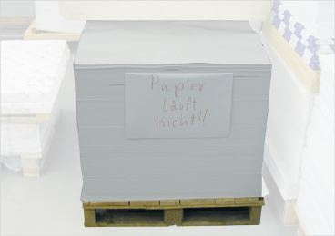
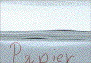
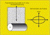
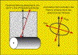
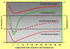
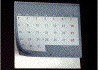

NICHTPLANLAGE - VERSPANNUNGEN IM PAPIER
|
Unter Nichtplanlage von Papier versteht man im
Allgemeinen Roll- bzw. Wölbneigung,
Randwelligkeit und Tellern von ganzen Papierstapeln
oder auch von einzelnen Bogen vor bzw. nach dem
Druck (Abb.1 und Abb. 2). Auch
Diagonalverspannungen im Papier zählen zu
dieser Fehlererscheinung. In der Folge ergeben sich
nicht plan liegende Bogen oder Stapel, die beim
Druckvorgang zu Faltenbildung und zu diversen
Verdruckbarkeitsstörungen (Passerdifferenzen,
Dublieren) bzw. nach dem Druck zu
Verarbeitungsstörungen führen.
Speziell bei Einzelblättern als Endprodukt
(z. B. Kalenderblätter) wirkt diese
Fehlererscheinung optisch sehr
beeinträchtigend.
|

|
Abb. 1: Nichtplanlage eines Stapels aufgrund
klimatischer Schwierigkeiten.
|
|
|
|
Mögliche Ursachen:
|
|

|
|
Abb. 2: Vergrößerte Darstellung der
Nichtplanlage im Stapel.
|
|
|
|

|
|
Abb. 3: Schematische Darstellung des
Dehnverhaltens von Papier bei idealer
Faserorientierung.
|
|
|
|

|
|
Abb. 4: Schematische Darstellung des
Dehnverhaltens von Papier bei stark abweichender
Faserorientierung von der Ideallinie.
|
|
|
|

|
|
Abb. 5: Temperatur- und Feuchteänderung in
Papierstapeln während des
Transportes und bei anschließender
Lagerung.
|
|
|
|

|
|
Abb. 6: Hochstehen der Ecken bei Kalendern.
|
|
|
|
|
|
Abb. 7: Hochstehen der Ecken bei Kalendern -
Seitenansicht.
|
|
|
|
|
|
Abb. 8: Hochstehen der Ecken nach Lagerung eines
unbedruckten Papiermusters
im Trockenschrank.
|
|
|
|

|
|
|
|
|
|
|
Randwelligkeit:
Eine Randwelligkeit des Papiers wird hervorgerufen, wenn die
Stapelfeuchte unter der Luftfeuchte der Umgebungsluft liegt,
wenn also entweder zu trockenes Papier einer höheren
Luftfeuchte oder Papier mit einer normalen
Gleichgewichtsfeuchte einer übermäßig
feuchten Atmosphäre ausgesetzt wird.
Dies kann vor allem in den warmen und feuchten Sommermonaten
in unklimatisierten Lager- und Druckräumen bzw. bei
nicht wasserdampfdicht verpacktem Papier beim Transport und
bei der Lagerung in feuchter Atmosphäre auftreten.
Werden in der kalten Jahreszeit unterkühlte und
unverpackte Papierstapel in die warme Atmosphäre der
Druckräume gebracht, so wird die umgebende Luft
abgekühlt und die relative Luftfeuchte stark
erhöht. In jedem Fall wird von den Bogenrändern
Feuchtigkeit aufgenommen und eine entsprechende Dehnung der
Bogenkanten gegenüber der Bogenmitte hervorgerufen.
Tellern:
Ein Tellern des Papiers tritt ein, wenn Papierstapel mit
normalem Feuchtegehalt einer trockenen Atmosphäre
ausgesetzt werden. Den Bogenkanten wird Wasser entzogen und
sie schrumpfen gegenüber der Bogenmitte.
Ein Tellern tritt vor allem in der kalten Jahreszeit auf,
wobei in geheizten, nicht klimatisierten bzw. nicht
befeuchteten Arbeitsräumen die relative Luftfeuchte bis
auf Werte unter 20 % absinken kann.
Roll- bzw. Wölbneigung:
Beim Durchlauf durch die Bogenmaschine ohne Bogenwendung
wird Feuchtmittel einseitig auf die Papieroberfläche
übertragen. Untersuchungen haben gezeigt, dass die
Wassermengen beim Vierfarben-Offsetdruck in der
Größenordnung von 0,5 g/m2 bis zu 3
g/m2 liegen können. Abhängig ist dies
von der Feuchtmittelführung, der Art der
Druckplattenoberfläche, der Feuchtmittelzusammensetzung
und der Saugfähigkeit des Papiers gegenüber
Wasser. Diese einseitige Befeuchtung bewirkt ein Quellen der
Fasern in der befeuchteten Schicht des Papiers und damit ein
Rollen entgegengesetzt zur befeuchteten Seite, parallel zur
Laufrichtung des Papiers. Durch den Feuchtigkeitsausgleich
bei der Lagerung wird die Rolltendenz in den meisten
Fällen wieder kompensiert, es sei denn eine bleibende
Dehnung der Papierfasern bewirkt die Rollneigung.
Wenn Papiere verdruckt werden, die starke Unterschiede in
ihren Eigenschaften und der Oberflächenstruktur
zwischen Vorder- und Rückseite aufweisen, ist die
Gefahr der Rollneigung höher. Aufgrund der
Zweiseitigkeit kann auch das Wasseraufnahmeverhalten der
Papiere unterschiedlich sein.
In Einzelfällen kann bei Kartonsorten auch eine
Rollneigung quer zur Faserlaufrichtung auftreten. Die
Ursache dafür ist eine harte Wicklung im Bereich des
Rollenkerns. Dadurch findet eine mechanische Verformung
parallel zur Rollenachse statt, was zur Rollneigung
führt.
Diagonalverspannung:
Diagonalverspannungen im Papier treten überwiegend dann
auf, wenn die Faserorientierung, also die Hauptausrichtung
der Fasern im Papier, stark von der
Papierproduktionsrichtung abweicht. Im Idealfall
verläuft die Faserorientierung in etwa in der
0°-Linie. Das heißt, die Fasern verlaufen nahezu
parallel zur Produktionsrichtung. Das Dehnverhalten des
Papiers ist im Idealfall in 0°-Richtung (längs) am
geringsten und in + oder - 90° (quer) am höchsten
(Abb. 3). Bei stark abweichender Faserorientierung von der
Ideallinie um einen Winkel x ändert sich das
Dehnverhalten des Papiers um diesen Winkel (Abb. 4).
Liegt ein Papier mit stark abweichender Faserorientierung
zur Produktion vor, so zeigt sich dann bei
Feuchtmittelaufnahme oder bei Austrocknung (z. B. im
Laserdrucker) eine diagonal verlaufende Wölbung
aufgrund des von der Ideallinie abweichenden
Dehnverhaltens.
Im Bogenoffset führt dies zum Hochstehen der Ecken; bei
Endlosstapel ist Stapelschieflage oder Stapelschräglage
die Folge.
Ungleichmäßige Verformung - beuliges Papier:
Eine partielle Nicht-Planlage des Papiers führt zu
ungleichmäßig über den Bogen verteilten,
örtlich begrenzten Passerdifferenzen. Dies wird durch
ungleichmäßige Feuchtigkeitsverteilung im Bogen
verursacht.
|
Mögliche Abhilfen:
|
|
Randwelligkeit und Tellern:
Das Papier für den Bogenoffsetdruck sollte mit einer
relativen Feuchte von 50 % ± 5 % angeliefert werden.
Die relative Feuchte des Papiers ist im Sinne einer
Eingangskontrolle routinemäßig zu
überprüfen. Der Drucksaal sollte ebenfalls auf
eine relative Feuchte von 50 % klimatisiert werden. Dies
sind Grundvoraussetzungen für störungsfreies
Drucken.
Weiterhin empfiehlt es sich, dass die angelieferten
Papierstapel in einem verpackten Zustand belassen werden.
Ein Zeitraum von u. U. mehreren Tagen ist für den
Temperaturangleich an die Raumtemperatur einzuhalten und in
der Logistik der Papierbestellung zu
berücksichtigen.
Als Faustregel lässt sich dabei anwenden:
Pro 10 °C Temperaturdifferenz zwischen Stapel und
Umgebung und pro 1,0 m2 Stapelvolumen muss
eine Angleichdauer von 1 Tag berücksichtigt werden.
Bei Abweichung der Gleichgewichtsfeuchte
(Umgebungsfeuchte/Papierfeuchte) innerhalb ± 5 % ist
eine Randwelligkeit bzw. Tellern nicht zu
befürchten.
In unklimatisierten Druckräumen mit zwangläufig
oft sehr starken Feuchtigkeitsschwankungen ist es ratsam,
die Papierstapel zwischen den einzelnen
Maschinendurchgängen durch wasserdampfdichte
Umhüllung vor Feuchtigkeitseinwirkung zu
schützen.
Im Rollenoffset kann Randwelligkeit nur durch den Einsatz
von speziellen Rückbefeuchtungsaggregaten verringert
bzw. vermieden werden.
Roll- bzw. Wölbneigung:
Zur Vermeidung der feuchtigkeitsbedingten Rollneigung nach
dem Durchlauf durch die Offsetmaschine ist die
Feuchtmittelführung so gering wie möglich zu
halten.
Stellt man eine bleibende Rollneigung der Bogen nach dem
einseitigen Druck fest, so kann durch einen Leerlauf der
Bogenrückseite mit angestellten Feuchtwerken
(Streckgang) die einseitige Wassereinwirkung ausgeglichen
und die Rollneigung kompensiert werden.
Diagonalverspannung:
Die Diagonalverspannung hat meist ihre Ursache in stark
abweichender Faserorientierung. In diesem Fall bleibt nur
der Wechsel auf eine alternative Papiersorte.
|
Beispiel(e):
|
|
Temperatur- und Feuchteänderung in Papierstapeln
beim Transport:
Untersuchungen an 3 Papierstapeln ergaben, dass während
des Transportes der Stapel die Temperatur von 23 °C bei
der Auslieferung auf 6 °C bei der Anlieferung sank. Bei
diesem Temperaturunterschied reduzierte sich die
Gleichgewichtsfeuchte - bei unterschiedlichen
Ausgangsfeuchten - des ersten Stapels um 4 %, die des
zweiten Stapels um 6 % und die des dritten Stapels um 7 %.
Nach der Anlieferung in der Druckerei wurde der Temperatur-
und der Feuchteverlauf über einen Zeitraum von 10 Tagen
verfolgt. Es zeigte sich dabei, dass sowohl die Temperatur
als auch die Feuchte nach ca. 30 Stunden wieder die
Ausgangswerte erreicht hatten (Abb. 5).
Diagonalverspannungen im Papier bei einer
Kalenderproduktion:
Wandkalender werden in Büros und Haushalten
während des ganzen Jahres den unterschiedlichsten
Klimaverhältnissen ausgesetzt. Trotz dieser Bedingungen
sollen die einzelnen Blätter ein möglichst planes
Aussehen haben.
In manchen Fällen ist jedoch eine leichte Wölbung
zur Vorder- oder Rückseite zu beobachten. Diese geringe
Nichtplanlage kann durch eine gewisse Zweiseitigkeit des
Papiers hervorgerufen werden. Auch einseitig gestrichene
Sorten neigen zur Wölbung, da das Quellverhalten ihrer
Vorder- und Rückseite unterschiedlich ist. Ferner kann
bei dem meist einseitigen Vorderseitendruck durch Einfluss
von Druckfarbe und Feuchtmittel eine gewisse Nichtplanlage
bewirkt werden. Dieser Zustand wird im Allgemeinen vom
Auftraggeber und Käufer akzeptiert, vor allem dann,
wenn die Wölbung symmetrisch zur längeren oder
kürzeren Seite auftritt.
Ein Hochstehen der Ecken wird, wie im unten beschriebenen
Fall, weniger toleriert. Das Aussehen erinnert an
„Eselsohren” von Buchseiten und wirkt eher
unästhetisch.
Nach der Fertigung von Kalendern und nach Aushängen in
verschiedenen Räumen wurde ein Hochstehen der Ecken bis
zu 5 cm festgestellt. Da der Druckbetrieb sehr große
Erfahrungen mit der Produktion von Kalender hat und lt.
Angabe dieser Effekt in einem derartigen Maße noch nie
aufgetreten war, wurde vermutet, dass es sich um einen
Fehler im Papier handelt.
Der Papierhersteller dagegen war der Meinung, dass die
Reklamation durch die Wahl der falschen Laufrichtung und
durch den Druckprozess verursacht wurde. Die in der
Druckerei erstellten verschiedenen Probeanfertigungen gaben
keinen Hinweis auf falsche Laufrichtung.
Im Auftrag der Druckerei sollte die FOGRA die Ursache
für das Hochstehen der Ecken ermitteln.
Es handelte sich um ein ungestrichenes Papier, das
beidseitig vierfarbig im Bogenoffsetverfahren bedruckt
war.
Die zur Verfügung gestellten, beanstandeten Kalender
wurden in der FOGRA in verschiedenen Räumen
ausgehängt. Es zeigte sich dabei schon nach kurzer Zeit
ein starkes Hochstehen der Ecken (Abb. 6 und Abb. 7).
Da der Verdacht auf eine Diagonalverspannung im Papier
bestand, wurde an den Kalenderblättern
Bruchkraftmessungen an Proben durchgeführt, die im
Winkel von +30° und -30° von der 0°-Linie
(Produktionsrichtung) herausgeschnitten wurden.
Bei einem Papier mit idealer Faserorientierung dürften
sich bei diesen Messungen keine großen Unterschiede in
der Bruchkraft von linker und rechter Winkelung ergeben.
Im vorliegenden Fall jedoch zeigten sich an den Streifen mit
+30°-Winkelung gegenüber Proben mit
-30°-Winkelung generell geringere Werte. Bei dieser
Messung erhärtete sich der Verdacht auf ungünstige
Faserorientierung des Papiers.
Weiterhin wurden unbedruckte Rücklagemuster des
Papierherstellers aus dem fraglichen Produktionszeitraum
(Format 10 cm x 10 cm) im Wärmeschrank bei 50 °C
über eine Dauer von 30 s gelagert.
Es zeigte sich - wie bei den beanstandeten Kalendern - ein
deutliches Hochstehen der Ecken. Vergleichsproben
ließen lediglich parallel zur Faserlaufrichtung eine
normale, leichte Wölbung zur Vorderseite erkennen. Die
Abb. 8 zeigt das Hochstehen der Ecken an einem unbedruckten
Rücklagemuster.
Diese Tests zeigten, dass, unabhängig vom Druckprozess,
das gelieferte Papier eine Diagonalverspannung aufwies und
damit für die Reklamation verantwortlich war.
Die durchgeführten Bruchkraftprüfungen an
bedruckten Exemplaren und Rollneigungstests haben insgesamt
gezeigt, dass das Hochstehen der Ecken an
Kalenderblättern in einer Diagonalverspannung des
gelieferten Papiers zu suchen war.
Die Auflage musste neu gedruckt werden.
|
Allgemeine Hinweise:
|
|
Für den Reklamationsfall:
Druckausfallmuster sicherstellen.
Unbedruckte Papiermuster und unbedruckte Vergleichsmuster
sicherstellen (ca. 50 Blatt DIN A4). An diesen Mustern
können im Labor vergleichende Untersuchungen der
Rollneigung, der Faserorientierung, und sonstige
Klimatisierungsversuche vorgenommen werden.
Ausgangsfeuchte des Papiers messen.
Stapellage beobachten.
Raumfeuchte messen.
Produktionsdaten protokollieren.
Ergänzende Literatur:
FALTER, K.-A.:
Klima, Papier und Druck.
München: FOGRA, Sept. 1998, Praxis Report Nr. 50
N.N.:
Div. technische Vorträge, gehalten anlässlich des
FOGRA-Symposiums „Klima, Papier und Druck“.
In: FOGRA-Symposium „Klima, Papier und Druck“,
München, 1984, Referatemappe
WALENSKI, W.:
Papier und Klima.
In: Print (1993), Nr. 1 und 2, Teil 1 und 2
FALTER, K.-A.; KIRMEIER, M.:
Erfassung der Wirkungsweise von Rückbefeuchtungsanlagen
in Rollenoffsetmaschinen.
Wiesbaden: Bundesverband Druck und Medien e.V., 1995, -
Informationen (Artikel Nr. 86450)
N.N.:
Ultraschallprüfung - TSO Tester.
In: L & W Handbuch, 1998, S. 10 - 30, Lorentzen &
Wettre, München
|
|
|
|
|
|
|
Kontakt:
stadler@fogra.org
|
Nic-sta-200111
|